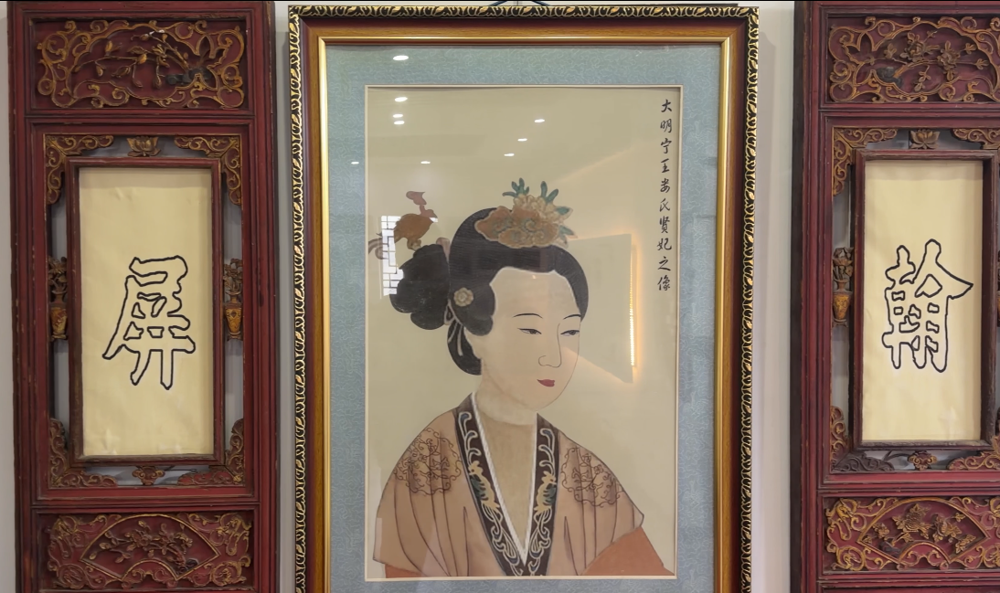
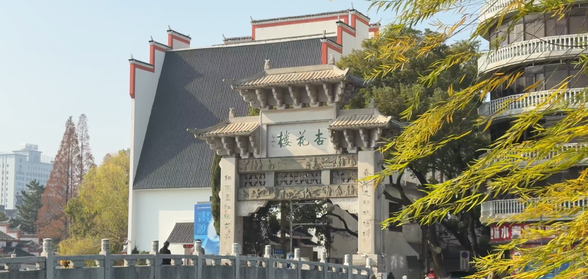
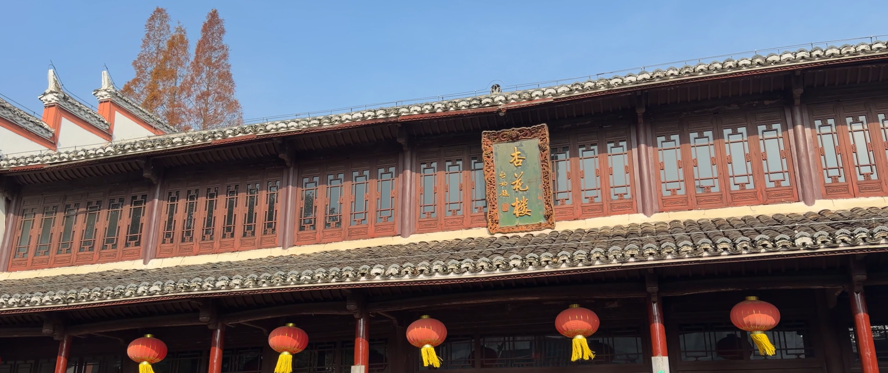
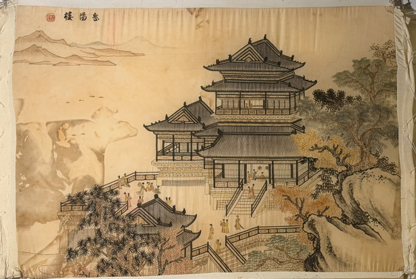

发绣历史发展
探索发绣艺术的起源与演变
明代
发绣起源
据《江城旧事》记载，娄妃曾以发作笔，写下“屏翰”二字，勉励当时的江西官员，坚守职责、护佑一方。直至今日，这两块字碑仍留在杏花楼中。也正是因此，娄妃被视为赣发绣第一代传承人。

明代
艺术繁荣
明代发绣达到鼎盛时期，出现了许多传世精品。江南地区成为发绣中心，技艺传承体系完善。

清朝 (1644-1912)
传承发展
清代赣发绣继续发展，与其他绣种相互影响。在南昌地区逐渐普及样式与绣法更为多样，技艺更加精湛。

近现代 (1912-1949)
传承危机
近现代社会动荡，赣发绣传承面临危机。但仍有少数艺人坚持创作，为后来的复兴保存了技艺火种。

当代 (1949至今)
创新发展
当代发绣在传统基础上创新发展，题材更加丰富，技艺更加精湛。发绣被列入非物质文化遗产，得到国家保护与传承。

发绣知识问答
3题